Maxwell’s Equations¶
Electromagnetic Field¶
The electromagnetic field is fully described by a vector field called the 4-potential . It has four components that we can label any way we want, the traditional way is to use:
where  is called the electrostatic scalar potential,
is called the electrostatic scalar potential,  is called
the vector potential and is the speed of light.
The Lagrangian density for the free (noninteracting) field is:
is called
the vector potential and is the speed of light.
The Lagrangian density for the free (noninteracting) field is:
The Lagrangian for a (charged) particle is:
it produces the following charge density:
The interaction between the charged particle (or in general any charged body) with some charge density and the electromagnetic field is given by the Lagrangian density:

where:

There are several approaches how to obtain the above Lagrangians from some other assumptions, but ultimately the exact form of the Lagrangians has to be given by experiment. It is our only assumption and we derive everything else from it. All together, the Lagrangian of a charged particle and an electromagnetic field is:
(1)
Note that:
The Euler-Lagrange equations for the electromagnetic field (in terms of  and ) are:
and ) are:
![\partial^\mu {\partial\over\partial (\partial^\mu A^\nu)}
\left(
-{1\over 2\mu_0} \partial_\alpha A_\beta \partial^\alpha A^\beta
- j_\alpha A^\alpha
\right)
={\partial\over\partial A^\nu}
\left(
-{1\over 2\mu_0} \partial_\alpha A_\beta \partial^\alpha A^\beta
- j_\alpha A^\alpha\right)
\partial^\mu {\partial\over\partial (\partial^\mu A^\nu)}
\left(
{1\over 2\mu_0} g_{\delta\alpha} g_{\epsilon\beta}
\partial^\delta A^\epsilon \partial^\alpha A^\beta
\right)
={\partial\over\partial A^\nu} j_\alpha A^\alpha
{1\over 2\mu_0} \partial^\mu g_{\delta\alpha} g_{\epsilon\beta}
\left(
\delta^\delta_\mu \delta^\epsilon_\nu \partial^\alpha A^\beta
+
\partial^\delta A^\epsilon \delta^\alpha_\mu \delta^\beta_\nu
\right)
= j_\alpha \delta^\alpha_\nu
{1\over 2\mu_0} \partial^\mu
\left( g_{\mu\alpha} g_{\nu\beta}
\partial^\alpha A^\beta
+g_{\delta\mu} g_{\epsilon\nu}
\partial^\delta A^\epsilon
\right)
= j_\nu
{1\over 2\mu_0} \partial^\mu
\left(\partial_\mu A_\nu + \partial_\mu A_\nu \right)
= j_\nu
{1\over \mu_0} \partial^\mu \partial_\mu A_\nu = j_\nu](../../_images/math/d46ede9b6ab42529c8f44b874883d6994ed9afd5.png)
(2)
Equations for the particle (in terms of  and
and  ) are:
) are:
![{\d \over \d \tau} {\partial L\over \partial v_\mu}
= {\partial L \over \partial x_\mu}
{\d \over \d \tau} {\partial \over \partial v_\mu}
\left(\half m g^{\alpha\beta} v_\alpha v_\beta
+ q v_\alpha A^\alpha\right)
= q v_\alpha {\partial A^\alpha \over \partial x_\mu}
{\d \over \d \tau}
\left(
\half m g^{\alpha\beta} (\delta_{\alpha\mu} v_\beta
+ v_\alpha \delta_{\beta\mu})
+ q \delta_{\alpha\mu} A^\alpha\right)
= q v_\alpha {\partial A^\alpha \over \partial x_\mu}
{\d \over \d \tau}
\left(
\half m (g^{\mu\beta} v_\beta + g^{\alpha\mu} v_\alpha)
+ q A^\mu\right)
= q v_\alpha {\partial A^\alpha \over \partial x_\mu}
{\d \over \d \tau}
\left(
\half m (v^\mu + v^\mu)
+ q A^\mu\right)
= q v_\alpha {\partial A^\alpha \over \partial x_\mu}
{\d \over \d \tau}
\left(m v^\mu + q A^\mu\right)
= q v_\alpha {\partial A^\alpha \over \partial x_\mu}
m {\d v^\mu \over \d \tau}
= q \left(-{\d A^\mu\over\d\tau}
+ v_\alpha \partial^\mu A^\alpha\right)
m {\d v^\mu \over \d \tau}
= q \left(-v_\alpha \partial^\alpha A^\mu
+ v_\alpha \partial^\mu A^\alpha\right)
m {\d v^\mu \over \d \tau}
= q (\partial^\mu A^\alpha - \partial^\alpha A^\mu) v_\alpha](../../_images/math/18777d7a9c82f3dd2920af369d191aae70451d21.png)
(3)
Where is called the electromagnetic field strength tensor:
The only way to measure the electric field is through its interaction with the charge particle. As such, the actual physical field (that can be measured) is , which is invariant under any gauge transformation:
where 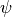 is a gauge function:
In other words, two different related by the gauge transformation
represent the exact same physical electromagnetic field (as given by the field
tensor). As such, we can modify the Lagrangian by applying the gauge
transformation to the field : this changes the equations of motion for
the field (thus the numerical values for will be different), but
doesn’t change the equation of motion for the particle, so the change will not
have any physical effect (cannot be measured).
By choosing as a solution to the equation , we get:
So for any 4-potential we can find such that the transformed 4-potential
obeys the Lorenz gauge condition .
In order to obtain a gauge invariant Lagrangian, we need to express it using using the following identity:
![{1\over 4} F_{\alpha\beta} F^{\alpha\beta}
={1\over 4}(\partial_\alpha A_\beta - \partial_\beta A_\alpha)
(\partial^\alpha A^\beta - \partial^\beta A^\alpha) =
={1\over 4}(
\partial_\alpha A_\beta
\partial^\alpha A^\beta
- \partial_\beta A_\alpha
\partial^\alpha A^\beta
-\partial_\alpha A_\beta
\partial^\beta A^\alpha
+ \partial_\beta A_\alpha
\partial^\beta A^\alpha
) =
={1\over 2}(
\partial_\alpha A_\beta
\partial^\alpha A^\beta
- \partial_\beta A_\alpha
\partial^\alpha A^\beta
) =
=\half \partial_\alpha A_\beta \partial^\alpha A^\beta
- \half\partial_\beta A_\alpha \partial^\alpha A^\beta =
=\half \partial_\alpha A_\beta \partial^\alpha A^\beta
-\half (\partial^\alpha A_\alpha)^2
- \half\partial_\beta (A_\alpha \partial^\alpha A^\beta
-A^\beta\partial^\alpha A_\alpha)](../../_images/math/0c938d8094209c5845a21f9ac149a820c4c0c717.png)
The 4-divergence 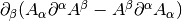 doesn’t change Euler-Lagrange equations, so we can ignore it. We can see, that in the Lorenz gauge the term (which is gauge invariant) simplifies to the term in the Lagrangian (1). The gauge invariant Lagrangian is:
(4)
The E.-L. equation for the particle doesn’t change, the equation for the field becomes:
(5)
Which in Lorenz gauge simplifies to equation (2). In order to write equations of motion in terms of only, we need another equation for it:
(6)
We used the fact, that the partial derivatives are symmetric in the indices and while is antisymmetric.
Maxwell’s Equations¶
Maxwell’s equations are the equations for the electromagnetic field in terms of the physical field strengh tensor, equations (5) and (6):
The field strength tensor is antisymmetric, so it has 6 independent components (we use metric tensor with signature -2):

There is freedom in how we label the components. The standard way is to express
them using physical fields and  that are introduced by:
that are introduced by:
or in components:
Comparing to the above, we get:
In particular:
so we get:

In terms of  and fields, the Maxwell’s equations become:
and fields, the Maxwell’s equations become:
In Lorenz gauge, the equation for the 4-potential is (2):
The solution to this equation is:
For scalar potential () we get:

And for vector potential () we get:
(7)
Lorentz Force¶
The equation for the charge particle (3) is:
In components:
Using coordinate time  and coordinates
and coordinates  instead of the proper time
and 4-vector , we need to rewrite the action:
instead of the proper time
and 4-vector , we need to rewrite the action:
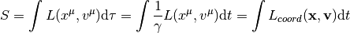
where is the Lagrangian expressed in coordinates
and (and thus is not Lorentz invariant):
the particle’s canonical momentum is:
where is the kinetic momentum. Euler-Lagrange equations are:
![{\d \over \d t} {\partial L_{coord}\over \partial v_i}
= {\partial L_{coord} \over \partial x_i}
{\d \over \d t} P_i = {\partial L_{coord} \over \partial x_i}
{\d \over \d t} \left({m v_i\over\sqrt{1-{v^2\over c^2}}} + e A_i\right)
= {\partial \over \partial x_i}\left(-m c^2\sqrt{1-{v^2\over c^2}}
- e\phi + e{\bf v}\cdot {\bf A}\right)
{\d \over \d t} \left({m v_i\over\sqrt{1-{v^2\over c^2}}}\right)
+ e {\d A_i\over \d t}
= -e{\partial \phi\over \partial x_i}
+e{\bf v}\cdot{\partial {\bf A}\over \partial x_i}
{\d \over \d t} \left({m v_i\over\sqrt{1-{v^2\over c^2}}}\right)
= e\left(-{\partial \phi\over \partial x_i}
-{\d A_i\over \d t}
+v_j{\partial A_j\over \partial x_i}\right)
{\d \over \d t} \left({m v_i\over\sqrt{1-{v^2\over c^2}}}\right)
= e\left(-{\partial \phi\over \partial x_i}
-{\partial A_i\over \partial t}-v_j{\partial A_i\over\partial x_j}
+v_j{\partial A_j\over \partial x_i}\right)
{\d \over \d t} \left({m {\bf v}\over\sqrt{1-{v^2\over c^2}}}\right)
= e\left({\bf E} + {\bf v}\times {\bf B}\right)](../../_images/math/3a80a39d99fd335ec6ffc76e7568fb02857ce7fa.png)
For continuous case (current), the force due to the magnetic field is:
Hamiltonian¶
Expressing in terms of we get:
![{\bf P} = {m{\bf v}\over\sqrt{1-{v^2\over c^2}}} + e{\bf A}
{\bf P} - e{\bf A} = {m{\bf v}\over\sqrt{1-{v^2\over c^2}}}
P_i - e A_i = {m v_i\over\sqrt{1-{v^2\over c^2}}}
(P_i - e A_i)^2\left(1-{v^2\over c^2}\right) = m^2 v_i^2
(P_i - e A_i)^2\left(1-{(v_1^2 + v_2^2 + v_3^3)^2\over c^2}\right)
= m^2 v_i^2
v_i^2 = {(P_i - e A_i)^2 c^2 \over m c^2 + ({\bf P} - e{\bf A})^2}
|v_i| = {|P_i - e A_i| \over \sqrt {m + {1\over c^2 } ({\bf P} - e{\bf A})^2}}
v_i = {P_i - e A_i \over \sqrt {m + {1\over c^2 } ({\bf P} - e{\bf A})^2}}
{\bf v} = {{\bf P} - e{\bf A}\over\sqrt{m^2 +
{1\over c^2}({\bf P} - e{\bf A})^2}}
{\bf v} = {c({\bf P} - e{\bf A})\over\sqrt{m^2c^2 + ({\bf P} - e{\bf A})^2}}](../../_images/math/c3788f7952c77253287787a1f6ac8218baeef395.png)
The system of equations was solved for  using the code
(in there , 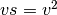 and ):
using the code
(in there , 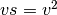 and ):
>>> from sympy import var, solve
>>> var("P1 P2 P3 m c v1s v2s v3s")
(P1, P2, P3, m, c, v1s, v2s, v3s)
>>> vs = v1s+v2s+v3s
>>> solve([P1**2*(1-vs/c**2) -v1s*m**2,
... P2**2*(1-vs/c**2) -v2s*m**2,
... P3**2*(1-vs/c**2) -v3s*m**2], [v1s, v2s, v3s])
{v1s: P1**2*c**2/(P1**2 + P2**2 + P3**2 + c**2*m**2),
v2s: P2**2*c**2/(P1**2 + P2**2 + P3**2 + c**2*m**2),
v3s: P3**2*c**2/(P1**2 + P2**2 + P3**2 + c**2*m**2)}
And the absolute value was removed by using the fact, that has the same
sign as which follows from the second equation.
The Hamiltonian is:
![H({\bf x}, {\bf P}, t) = {\bf v} \cdot {\bf P} - L =
= {\bf v} \cdot {\bf P}
+m c^2\sqrt{1-{v^2\over c^2}} + e\phi - e{\bf v}\cdot {\bf A} =
= {\bf v} \cdot ({\bf P}-e{\bf A})
+m c^2\sqrt{1-{v^2\over c^2}} + e\phi =
= {c({\bf P} - e{\bf A})\cdot({\bf P}-e{\bf A})\over\sqrt{m^2c^2 +
({\bf P} - e{\bf A})^2}}
+m c^2\sqrt{1-{1\over c^2}\left({c({\bf P} - e{\bf A})\over\sqrt{m^2c^2 + ({\bf P} - e{\bf A})^2}}\right)^2} + e\phi =
= {c({\bf P} - e{\bf A})^2\over\sqrt{m^2c^2 + ({\bf P} - e{\bf A})^2}}
+m c^2\sqrt{1-{({\bf P} - e{\bf A})^2\over m^2c^2 + ({\bf P} - e{\bf A})^2}} + e\phi =
= {c({\bf P} - e{\bf A})^2\over\sqrt{m^2c^2 + ({\bf P} - e{\bf A})^2}}
+m c^2\sqrt{m^2 c^2 \over m^2c^2 + ({\bf P} - e{\bf A})^2} + e\phi =
= {c\left(({\bf P} - e{\bf A})^2+m^2c^2\right)\over
\sqrt{m^2c^2 + ({\bf P} - e{\bf A})^2}} + e\phi =
= c\sqrt{m^2c^2 + ({\bf P} - e{\bf A})^2} + e\phi](../../_images/math/d5e62e6224f6a2497152b18afe7a6497f4141cb7.png)
Electromagnetic Stress Tensor¶
The stress tensor is calculated from the Lagrangian:
using the Noether formula:
We raise the  index:
index:
This tensor is not symmetric under the exchange of the indices. To
make it symmetric, we add a total derivative term
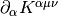, where is antisymmetric
in its first two indices. This guarantees that
so that the new stress energy
tensor is still conserved. We choose
 and get:
and get:
![T^{\mu\nu} +\partial_\alpha K^{\alpha\mu\nu}
= -{1\over\mu_0} F^{\mu\alpha}
\partial^\nu A_\alpha+{1\over 4\mu_0}g^{\mu\nu}
F_{\alpha\beta} F^{\alpha\beta}
+{1\over\mu_0}\partial_\alpha ( F^{\mu\alpha} A^\nu) =
= {1\over\mu_0}F^{\mu\alpha}
(\partial_\alpha A^\nu - \partial^\nu A_\alpha)
+{1\over 4\mu_0}g^{\mu\nu}
F_{\alpha\beta} F^{\alpha\beta}
+{1\over\mu_0}(\partial_\alpha F^{\mu\alpha}) A^\nu =
= {1\over\mu_0}F^{\mu\alpha} F_\alpha{}^\nu
+{1\over 4\mu_0}g^{\mu\nu}
F_{\alpha\beta} F^{\alpha\beta} =
= -{1\over\mu_0}\left(F^{\mu\alpha} F^\nu{}_\alpha
-{1\over 4}g^{\mu\nu}
F_{\alpha\beta} F^{\alpha\beta}\right)](../../_images/math/98e61b240eca3c43a4ebe22f52b9579fae54a13f.png)
where we used .
Another way to derive the stress energy tensor is from general relativity using the formula:
So we write the action:
And vary with respect to  :
:
![\delta S_{EM}
= -\delta \int {1\over 4\mu_0} g^{\alpha\lambda} g^{\beta\rho}
F_{\alpha\beta} F_{\lambda\rho} \sqrt{ |\det g| }\d^4 x =
= -{1\over 4\mu_0} \int \left(\delta (g^{\alpha\lambda} g^{\beta\rho})
F_{\alpha\beta} F_{\lambda\rho} \sqrt{ |\det g| }
+ g^{\alpha\mu} g^{\beta\rho}
F_{\alpha\beta} F_{\lambda\rho} \left(\delta \sqrt{ |\det g| }
\right)
\right)\d^4 x =
= -{1\over 4\mu_0} \int \left(2(\delta g^{\alpha\lambda}) g^{\beta\rho}
F_{\alpha\beta} F_{\lambda\rho} \sqrt{ |\det g| }
+ g^{\alpha\lambda} g^{\beta\rho}
F_{\alpha\beta} F_{\lambda\rho} \left(-\half \sqrt{ |\det g| }
g_{\mu\nu} (\delta g^{\mu\nu})
\right)
\right)\d^4 x =
= -{1\over 4\mu_0} \int \left(2(\delta g^{\alpha\lambda})
F_{\alpha\beta} F_\lambda{}^\beta
-\half F_{\alpha\beta} F^{\alpha\beta}
g_{\mu\nu} (\delta g^{\mu\nu})
\right) \sqrt{ |\det g| } \d^4 x =
= -{1\over 2\mu_0} \int \left(
F_{\mu\beta} F_\nu{}^\beta
-{1\over 4} F_{\alpha\beta} F^{\alpha\beta}
g_{\mu\nu}
\right) (\delta g^{\mu\nu}) \sqrt{ |\det g| } \d^4 x](../../_images/math/92350dbe8779a0828da80bf285eb84a342fec886.png)
And we get:
Examples¶
Biot-Savart Law¶
Maxwell’s equations in Lorenz gauge (2):
have the solution for the vector potential (7):
Assuming :
The magnetic field is then:

If the current can be approximated by an infinitely-narrow wire, we get:
and:
Example: Straight Wire¶
Let’s assume infinite straight wire carrying constant current  :
:
![{\bf l} = (0, 0, l)
\d {\bf l} = (0, 0, 1)\d l
{\bf x} = (x, y, z)
{\bf x}-{\bf l} = (x, y, z-l)
{\bf B}({\bf x})
={\mu_0 I\over 4\pi}\int \d{\bf l} \times {{\bf x} - {\bf l}
\over |{\bf x} - {\bf l}|^3 } =
={\mu_0 I\over 4\pi} \int_{-\infty}^\infty (0, 0, 1) \times
{(x, y, z-l) \d l
\over (x^2 + y^2 + (z-l)^2)^{3\over 2} } =
=(y, -x, 0) {\mu_0 I \over 4\pi}\int_{-\infty}^\infty {\d l
\over (x^2 + y^2 + (z-l)^2)^{3\over 2} } =
=(y, -x, 0) {\mu_0 I \over 4\pi} {2\over x^2+y^2} =
=(y, -x, 0) {\mu_0 I \over 2\pi} {1\over x^2+y^2}](../../_images/math/fc020051aa8d928686f474f760d478d5f2b8da1c.png)
Where we used the value of the folowing integral:
For 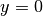:
Example: Circular Loop¶
Let’s assume a circular loop:
![{\bf l} = (r\cos\phi, r\sin\phi, 0)
{\d {\bf l}\over\d \phi} = (-r\sin\phi, r\cos\phi, 0)
{\bf x} = (x, y, z)
{\bf x}-{\bf l} = (x-r\cos\phi, y-r\sin\phi, z)
{\bf B}({\bf x})
={\mu_0 I\over 4\pi}\int \d{\bf l} \times {{\bf x} - {\bf l}
\over |{\bf x} - {\bf l}|^3 } =
={\mu_0 I\over 4\pi} \int_0^{2\pi} (-r\sin\phi, r\cos\phi, 0) \times
{(x-r\cos\phi, y-r\sin\phi, z) \d \phi
\over ((x-r\cos\phi)^2 + (y-r\sin\phi)^2 + z^2)^{3\over 2} } =
={\mu_0 I\over 4\pi} \int_0^{2\pi} {
(-z\cos\phi, -z\sin\phi, (x-r\cos\phi)\cos\phi+
(y-r\sin\phi)\sin\phi)
r\d \phi
\over ((x-r\cos\phi)^2 + (y-r\sin\phi)^2 + z^2)^{3\over 2} } =
={\mu_0 I\over 4\pi} \int_0^{2\pi} {
(-z\cos\phi, -z\sin\phi, x\cos\phi+y\sin\phi-r)
r\d \phi
\over (x^2+y^2+z^2+r^2-2xr\cos\phi-2yr\sin\phi)^{3\over 2} }](../../_images/math/f02598e0315168a35ed5952c6843e58cef35f173.png)
Due to the symmetry of the problem, we can set :
In the last equation we used the fact, that is odd and is
even on the interval .
For  we get:
we get:
Helmholtz Coil¶
Helmholtz coil is a set of two circular loops of radius  , that are
, that are  apart, where . Let’s calculate the magnetic field on the axis.
Magnetic field of the first coil is (see the previous example):
apart, where . Let’s calculate the magnetic field on the axis.
Magnetic field of the first coil is (see the previous example):
Second coil is positioned above the first one:
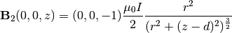
The total magnetic field is:
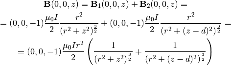
The field in the middle:
For we get:
where the magnitude of is:
For  and turns we get the magnitude of the field as
(we use SI units, so is in
and turns we get the magnitude of the field as
(we use SI units, so is in  and in tesla):
and in tesla):
Code:
>>> from math import pi, sqrt
>>> "%e" % (8*4*pi*1e-7*130 / (5*sqrt(5)*0.15))
'7.792861e-04'
Equation of motion for an electron in this field is:

The general solution is:
So the electron is moving in a circle with a center ,
 depends on the initial direction of the velocity and
depends on the initial direction of the velocity and  is the magnitude
of the initial velocity. There can also be a possible movement in the
is the magnitude
of the initial velocity. There can also be a possible movement in the  direction, but for the following initial conditions there is none:
direction, but for the following initial conditions there is none:
Then we get:
So the radius of the circle is .
Let the electrons by accelerated by the electric potential  :
:
So the initial velocity is:
and we get for the radius:
from which the electron charge versus mass ratio is:
For , ,  , ,
we get:
, ,
we get:
Code:
>>> from math import pi
>>> r = 0.15
>>> N = 130
>>> V = 300
>>> R = 0.05
>>> I = 1.48
>>> mu0 = 4*pi*1e-7
>>> "%e" % (125 * V * r**2 / (32 * mu0**2 * R**2 * N**2 * I**2))
'1.804238e+11'
Reference value is:
Code:
>>> e = 1.6021766e-19
>>> c = 299792458
>>> eV = e
>>> KeV = 1e3 * eV
>>> m = 510.998910 * KeV / c**2
>>> m
9.109382795192204e-31
>>> "%e" % (e / m)
'1.758820e+11'
or even simpler (we do not actually need the value of the electron charge ):
>>> c = 299792458
>>> KeV = 1e3
>>> m = 510.998910 * KeV / c**2
>>> "%e" % (1/m)
'1.758820e+11'
We can use the experimental value to calculate the electron rest mass energy:
Ampère’s Force Law¶
The force on a wire 1 due to a magnetic field of a wire 2 is:
Where is the magnetic field produced by the wire 2. Combining these two equations we get:
![{\bf F} = I_1 \int \d {\bf l}_1 \times {\bf B}({\bf l}_1) =
= I_1 \int \d {\bf l}_1 \times \left(
{\mu_0\over 4\pi}\int I_2(t)\d{\bf l}_2 \times {{\bf l}_1 - {\bf l}_2
\over |{\bf l}_1 - {\bf l}_2|^3 }\right) =
= {\mu_o I_1 I_2\over 4\pi} \int \int {\d {\bf l}_1 \times (
\d{\bf l}_2 \times ({\bf l}_1 - {\bf l}_2))
\over |{\bf l}_1 - {\bf l}_2|^3 } =
= {\mu_o I_1 I_2\over 4\pi} \int \int {
\d {\bf l}_2 (\d {\bf l}_1 \cdot ({\bf l}_1 - {\bf l}_2)) -
({\bf l}_1 - {\bf l}_2) (\d {\bf l}_2 \cdot\d {\bf l}_1)
\over |{\bf l}_1 - {\bf l}_2|^3 }](../../_images/math/20f28ed9725c5d93b1f29d67b2db7ccf5d7f226b.png)
Parallel Straight Wires¶
We calculate the force between two parallel straight infinite wires:
![{\bf l}_1 = ({d\over 2}, 0, l_1)
\d{\bf l}_1 = (0, 0, \d l_1)
{\bf l}_2 = (-{d\over 2}, 0, l_2)
\d{\bf l}_2 = (0, 0, \d l_2)
{\bf l}_1 - {\bf l}_2 = (d, 0, l_1-l_2)
\d {\bf l}_2 (\d {\bf l}_1 \cdot ({\bf l}_1 - {\bf l}_2)) -
({\bf l}_1 - {\bf l}_2) (\d {\bf l}_2 \cdot\d {\bf l}_1)
= (0, 0, \d l_2) (l_1-l_2)\d l_1 - (d, 0, l_1-l_2)\d l_2 \d l_1
= (-d, 0, 0)\d l_1 \d l_2
{\bf F}
= {\mu_o I_1 I_2\over 4\pi} \int \int {
\d {\bf l}_2 (\d {\bf l}_1 \cdot ({\bf l}_1 - {\bf l}_2)) -
({\bf l}_1 - {\bf l}_2) (\d {\bf l}_2 \cdot\d {\bf l}_1)
\over |{\bf l}_1 - {\bf l}_2|^3 } =
= {\mu_o I_1 I_2\over 4\pi} \int \int {
(-d, 0, 0)\d l_1 \d l_2
\over (d^2 + (l_1 - l_2)^2)^{3\over 2} } =
= (-1, 0, 0){\mu_o I_1 I_2\over 4\pi} \int \d l_1
\int_{-\infty}^\infty \d l_2 {
d
\over (d^2 + (l_1 - l_2)^2)^{3\over 2} } =
= (-1, 0, 0){\mu_o I_1 I_2\over 4\pi} \int \d l_1
{2\over d} =
= (-1, 0, 0){\mu_o I_1 I_2\over 2\pi d} \int \d l_1](../../_images/math/2075daf7aa670fa31f8b57fb60f91cdb08cfc15c.png)
Where we used the value of the folowing integral:
As such, the direction of the force on the first wire (at coordinates going in the direction) will be to the left and the force per
unit length is:
Because the second wire is at the coordinates and the force on the first wire is in the direction , the force between the wires is attractive, as long as and have the same sign (either both currents go up, or both down) and repulsive if and have opposite signs.
Let , , then the force is attractive and (we also use ):
Perpendicular Straight Wires¶
We calculate the force between two perpendicular straight infinite wires:
![{\bf l}_1 = ({d\over 2}, 0, l_1)
\d{\bf l}_1 = (0, 0, \d l_1)
{\bf l}_2 = (-{d\over 2}, l_2, 0)
\d{\bf l}_2 = (0, \d l_2, 0)
{\bf l}_1 - {\bf l}_2 = (d, -l_2, l_1)
\d {\bf l}_2 (\d {\bf l}_1 \cdot ({\bf l}_1 - {\bf l}_2)) -
({\bf l}_1 - {\bf l}_2) (\d {\bf l}_2 \cdot\d {\bf l}_1)
= (0, \d l_2, 0) l_1\d l_1
= (0, l_1, 0)\d l_1 \d l_2
{\bf F}
= {\mu_o I_1 I_2\over 4\pi} \int \int {
\d {\bf l}_2 (\d {\bf l}_1 \cdot ({\bf l}_1 - {\bf l}_2)) -
({\bf l}_1 - {\bf l}_2) (\d {\bf l}_2 \cdot\d {\bf l}_1)
\over |{\bf l}_1 - {\bf l}_2|^3 } =
= {\mu_o I_1 I_2\over 4\pi} \int \int {
(0, l_1, 0)\d l_1 \d l_2
\over (d^2 + l_1^2 + l_2^2)^{3\over 2} } =
= (0, 1, 0){\mu_o I_1 I_2\over 4\pi} \int_{-\infty}^\infty \d l_1
\int_{-\infty}^\infty \d l_2 {
l_1
\over (d^2 + l_1^2 +l_2^2)^{3\over 2} } =
= (-1, 0, 0){\mu_o I_1 I_2\over 4\pi} \int_{-\infty}^\infty \d l_1
{2 l_1\over d^2 + l_1^2}
=
= 0](../../_images/math/942cec12055492145a45fb7162d9e4283db1d1a5.png)
The integral is an odd functin of  , so it is zero. We used the value of
the folowing integral (but in fact it is already seen before this integral is
needed that the double integral must be zero):
, so it is zero. We used the value of
the folowing integral (but in fact it is already seen before this integral is
needed that the double integral must be zero):
As such, there will be no net force.
Infinitely Long Wire and a Square Loop¶
We calculate the net force on a square loop with current of side  ,
whose center is far from an infinitely long wire with current :
,
whose center is far from an infinitely long wire with current :
The wire has coordinates and the magnetic field from it is (see the example above):
The four sides of the loop are ( ):
):
and the differentials are:
The net force on the loop is:
![{\bf F} = I_1 \int \d {\bf l}_1 \times {\bf B}
= I_1 \int \d {\bf l}_1 \times (0, -1, 0) {\mu_0 I_2 \over 2\pi
({\bf l}_1)_x} =
= {\mu_0 I_1 I_2\over 2\pi}\left(
\int_0^a {(0, 0, 1)\d l_1\over d-{a\over 2} + l_1}
+\int_0^a {(1, 0, 0)\d l_1\over d+{a\over 2}}
+\int_0^a {(0, 0, -1)\d l_1\over d+{a\over 2}-l_1}
+\int_0^a {(-1, 0, 0)\d l_1\over d-{a\over 2}}
\right) =
= {\mu_0 I_1 I_2\over 2\pi}\left(
(0, 0, 1)\left[\log \left| d-{a\over 2} + l_1 \right|
-\log \left|d + {a\over 2} - l_1\right| \right]_0^a
+(1, 0, 0)\left({a\over d + {a\over 2}}-{a\over d - {a\over 2}}
\right)\right) =
= {\mu_0 I_1 I_2\over 2\pi}\left(
(0, 0, 1) \cdot 0 +
(1, 0, 0){a^2\over d^2 - \left({a\over 2}\right)^2}
\right) =
= (1, 0, 0){\mu_0 I_1 I_2\over 2\pi}
{a^2\over d^2 - \left({a\over 2}\right)^2}](../../_images/math/43dc2f7277403febd2a0e0a896f1b23511ec814d.png)
Magnetic Dipole¶
![{\bf A}({\bf r}) = {\mu_0\over 4\pi} {{\bf m}\times{\bf r}\over r^3}
{\bf B}({\bf r}) = \nabla\times {\bf A}
= {\mu_0\over 4\pi} \nabla\times
\left({{\bf m}\times{\bf r}\over r^3}\right) =
= {\mu_0\over 4\pi} \left({\bf m}\nabla\cdot\left({\bf r}\over r^3\right)
-{\bf m}\cdot\nabla\left({\bf r}\over r^3\right)
\right) =
= {\mu_0\over 4\pi} \left({\bf m}\left(\left(\nabla{1\over r^3}\right)
\cdot{\bf r}+{1\over r^3}\nabla\cdot{\bf r}\right)
-{\bf m}\cdot\left(\left(\nabla{1\over r^3}\right)
{\bf r}+{1\over r^3}\nabla{\bf r}\right)\right)
=
= {\mu_0\over 4\pi} \left({\bf m}\left(\left(-{3{\bf r}\over r^5}\right)
\cdot{\bf r}+{1\over r^3}3\right)
-{\bf m}\cdot\left(\left(-{3{\bf r}\over r^5}\right)
{\bf r}+{1\over r^3}\one\right)\right)
=
= {\mu_0\over 4\pi} \left({\bf m}\left(-{3\over r^3}+{3\over r^3}\right)
+{\bf m}\cdot\left({3{\bf r}{\bf r}\over r^5}-{\one\over r^3}\right)
\right)
=
= {\mu_0\over 4\pi} \left({3{\bf r}({\bf m}\cdot{\bf r})\over r^5}
-{{\bf m}\over r^3}\right)](../../_images/math/c9095a1bf3f765abb4491d58f47b180920c6b3f6.png)
Bar Magnet¶
A good model of a bar magnet of the length  and width
and width  is a combination
of two magnetic monopoles (that sit inside the magnet, so one cannot actually
see them, just their behavior outside the magnet):
is a combination
of two magnetic monopoles (that sit inside the magnet, so one cannot actually
see them, just their behavior outside the magnet):
where:
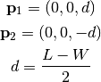
The magnetic moment vector is:
and its magnitude then is:
The permeability is:
For a typical bar magnet, we have for example:
The unit of is Tesla: .
Bar Magnet in a Coil¶
We throw a magnet through a coil and calculate the voltage on the coil. We use two model of the bar magnet: a magnetic dipole and two monopoles 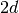 apart.
Geometry:
Field of the dipole:
we will need:
![{\bf v}\times{\bf B}({\bf l})
= {\mu_0\over 4\pi}{\bf v}\times
\left({3{\bf l}({\bf m}\cdot{\bf l})\over l^5}
-{{\bf m}\over l^3}\right) =
= {\mu_0\over 4\pi}
\left({3({\bf v}\times{\bf l})({\bf m}\cdot{\bf l})\over l^5}
-{{\bf v}\times{\bf m}\over l^3}\right) =
= {\mu_0\over 4\pi}
{3({\bf v}\times{\bf l})({\bf m}\cdot{\bf l})\over l^5}
=
= {\mu_0\over 4\pi}
{3(va\sin\theta, -va\cos\theta, 0)mz\over (a^2 + z^2)^{5\over2}} =
= {3\mu_0 m\over 4\pi}
{a v z\over (a^2 + z^2)^{5\over2}} (\sin\theta, -\cos\theta, 0)](../../_images/math/6b2cb61ae6f7401e6d785244517d9f0152a6be20.png)
and
Field of two monopoles:
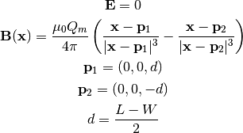
we will need:
![{\bf v}\times{\bf B}({\bf l})
= {\mu_0 Q_m\over 4\pi} \left(
{{\bf v}\times({\bf l}-{\bf p}_1) \over |{\bf l}-{\bf p}_1|^3}
-
{{\bf v}\times({\bf l}-{\bf p}_2) \over |{\bf l}-{\bf p}_2|^3}
\right) =
= {\mu_0 Q_m\over 4\pi} \left(
{(0, 0, v)\times(a\cos\phi, a\sin\phi, z-d) \over
(a^2+(z-d)^2)^{3\over2}}
-
{(0, 0, v)\times(a\cos\phi, a\sin\phi, z+d) \over
(a^2+(z+d)^2)^{3\over2}}
\right) =
= {\mu_0 Q_m a v \over 4\pi} \left(
{1 \over (a^2+(z-d)^2)^{3\over2}}
-
{1 \over (a^2+(z+d)^2)^{3\over2}}
\right) (\sin\phi, -\cos\phi, 0)](../../_images/math/b91a5d9532e94db2274d960090a59ccb6a522cd3.png)
and
Now we can calculate the voltage:
for the dipole we get
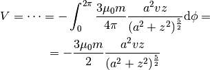
For two monopoles we get
For the dipole, the function
has a maximum and minimum for:
with the max value:
Code:
>>> from sympy import var, solve, S, refine, Q
>>> var("a z")
(a, z)
>>> f = z / (a**2+z**2)**(S(5)/2)
>>> solve(f.diff(z), z)
[-a/2, a/2]
>>> f.subs(z, a/2)
16*sqrt(5)*a/(125*(a**2)**(5/2))
>>> refine(f.subs(z, a/2), Q.positive(a))
16*sqrt(5)/(125*a**4)
So the maximum voltage is:
If we drop the magnet from height  above the coil into it, then its speed
will be in the middle of the coil, when
above the coil into it, then its speed
will be in the middle of the coil, when  . Then:
. Then:
And we get for the voltage dependence for dipole:
The time difference between the maximum and minimum is the time difference
between  and , so:
and , so:
The total flux doesn’t depend on the particular dependence of and
 :
:
![\Phi = \int_0^\infty V(t) \d t =
= - {3\mu_0 m\over 2} \int_0^\infty{v(t)a^2z(t)
\over (a^2 + z(t)^2)^{5\over2}} \d t =
= - {3\mu_0 m\over 2} \int_0^\infty{{\d z\over\d t}a^2z(t)
\over (a^2 + z(t)^2)^{5\over2}} \d t =
= - {3\mu_0 m\over 2} \int_0^\infty{a^2z
\over (a^2 + z^2)^{5\over2}} \d z =
= - {3\mu_0 m\over 4} \int_{a^2}^\infty{a^2
\over u^{5\over2}} \d u =
= - {3\mu_0 m a^2\over 4} \left(-{2\over 3}\right)
\left[1\over u^{3\over2}\right]_{a^2}^\infty =
= - {3\mu_0 m a^2\over 4} \left(-{2\over 3}\right)
\left[-1\over a^3\right] =
= - {\mu_0 m \over 2a}](../../_images/math/fb17ad83f8b94e8db60fc931b69439595ccefd7a.png)
For the voltage dependence of two monopoles, we get:
The total flux doesn’t depend on the particular dependence of and
:
![\Phi = \int_0^\infty V(t) \d t =
=-\int_0^\infty {\mu_0 Q_m a^2 v(t) \over 2} \left(
{1 \over (a^2+(z(t)-d)^2)^{3\over2}}
-
{1 \over (a^2+(z(t)+d)^2)^{3\over2}}
\right)
\d t =
=-\int_0^\infty {\mu_0 Q_m a^2 {\d z\over \d t} \over 2} \left(
{1 \over (a^2+(z(t)-d)^2)^{3\over2}}
-
{1 \over (a^2+(z(t)+d)^2)^{3\over2}}
\right)
\d t =
=-\int_0^\infty {\mu_0 Q_m a^2 \over 2} \left(
{1 \over (a^2+(z-d)^2)^{3\over2}}
-
{1 \over (a^2+(z+d)^2)^{3\over2}}
\right)
\d z =
=- {\mu_0 Q_m a^2 \over 2} \left(
\int_0^\infty{1 \over (a^2+(z-d)^2)^{3\over2}} \d z
-
\int_0^\infty{1 \over (a^2+(z+d)^2)^{3\over2}} \d z
\right) =
=- {\mu_0 Q_m a^2 \over 2} \left(
{1\over a^2}\left(1 + {d\over\sqrt{a^2 + d^2}}\right)
-
{1\over a^2}\left(1 - {d\over\sqrt{a^2 + d^2}}\right)
\right) =
=- {\mu_0 Q_m d\over\sqrt{a^2 + d^2}}](../../_images/math/6c76d4c9aacb643d92aaa6bc247761a2965b792d.png)
Note that in the limit , we get the magnetic moment and the last formula for two monopoles flux becomes the dipole flux.
As a particular example, consider a coil with loops,  ,
, . Then the total flux from the second peak
is:
,
, . Then the total flux from the second peak
is:
Code:
>>> from math import pi, sqrt
>>> mu0 = 4*pi*1e-7
>>> cm = 0.01
>>> Q_m = 43.
>>> d = 1.8*cm
>>> a = 1.4*cm
>>> N = 500
>>> -N*mu0*Q_m*d/sqrt(a**2+d**2)
-0.02132647889395681
For a single loop with we get:
and for a single loop with we get:
Code:
>>> a = 1.25*cm
>>> -mu0*Q_m*d/sqrt(a**2+d**2)
-4.438304942066266e-05
>>> a = 1.8*cm
>>> -mu0*Q_m*d/sqrt(a**2+d**2)
-3.820879326816195e-05
RC Circuit¶
Let’s consider resistor (with voltage ) and capacitor (with voltage
and current ) in a series. Voltage on the battery
is , then the equation for the circuit is:

with initial condition . We differentiate it:
and the initial condition follows from the first equation  .
The solution is:
.
The solution is:
Now we calculate the charge (using the initial condition for the charge above for the lower bound of the integral):
The voltage on the resistor is:
The voltage on the capacitor is:
Half life of the capacitor is defined as the time so that the charge is half of the total charge, and we get:
Semiconductor Device Physics¶
In general, the task is to find the five quantities:
where  (
( ) is the electron (hole) concentration,
() is the electron (hole) current density, is the
electric field.
) is the electron (hole) concentration,
() is the electron (hole) current density, is the
electric field.
And we have five equations that relate them. We start with the continuity equation:
where the current density is composed of electron and hole current densities:
and the charge density  is composed of mobile (electrons and holes) and
fixed charges (ionized donors and acceptors):
is composed of mobile (electrons and holes) and
fixed charges (ionized donors and acceptors):
where and is the electron and hole concetration,  is the net
doping concetration ( where is the concentration of ionized
donors, charged positive, and is the concentration of ionized acceptors,
charged negative) and
is the net
doping concetration ( where is the concentration of ionized
donors, charged positive, and is the concentration of ionized acceptors,
charged negative) and  is the electron charge (positive). We get:
is the electron charge (positive). We get:
Assuming the fixed charges are time invariant, we get:
where  is the net recombination rate for electrons and holes (a positive
value means recombination, a negative value generation of carriers). We get the
carrier continuity equations:
is the net recombination rate for electrons and holes (a positive
value means recombination, a negative value generation of carriers). We get the
carrier continuity equations:
(8)
Then we need material relations that express how the current is
generated using and and . A drift-diffusion model is to assume
a drift current () and a diffusion (),
which gives:
(9)
where , , , are the carrier mobilities and diffusivities.
Final equation is the Gauss’s law:
(10)
Equations¶
Combining (9) and (8) we get the following three
equations for three unknowns , and :
And it is usually assumed that the magnetic field is time independent, so and we get:
(11)
These are three nonlinear (due to the terms and
) equations for three unknown functions , and .
Example 1¶
We can substract the first two equations and we get:
and using and , we get:
So far we didn’t make any assumptions. Most of the times the net doping
concetration is time independent, which gives:
Assuming further  , we just get the equation of
continuity and the Gauss law:
, we just get the equation of
continuity and the Gauss law:

Finally, assuming also that that doesn’t depend on
time, we get:
 we get:
we get:Example 3¶
Let’s calculate the 1D pn-junction. We take the equations (11) and write them in 1D for the stationary state ():

We expand the derivatives and assume that  and
and  is constant:
is constant:
and we put the second derivatives on the left hand side:
(12)
now we introduce the variables 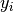:
and rewrite (12):
So we are solving the following six nonlinear first order ODE:
(13)